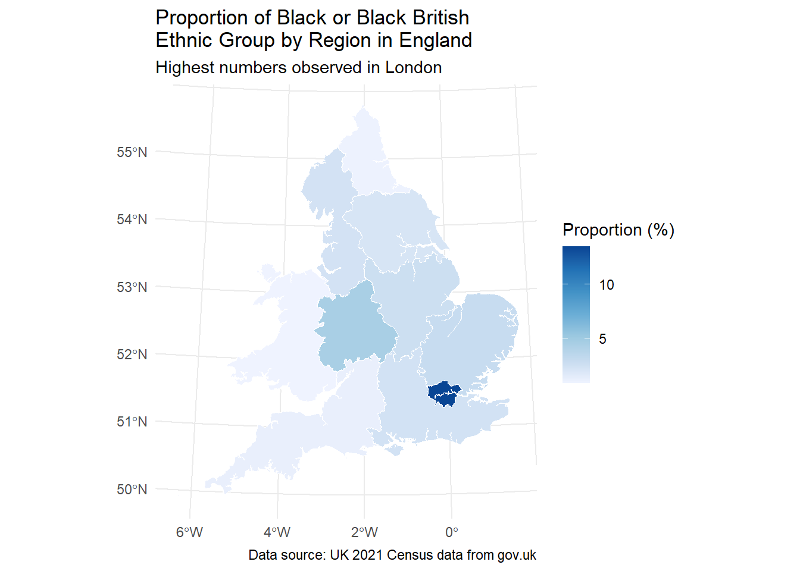
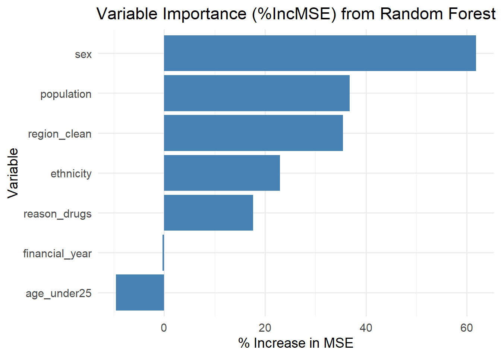
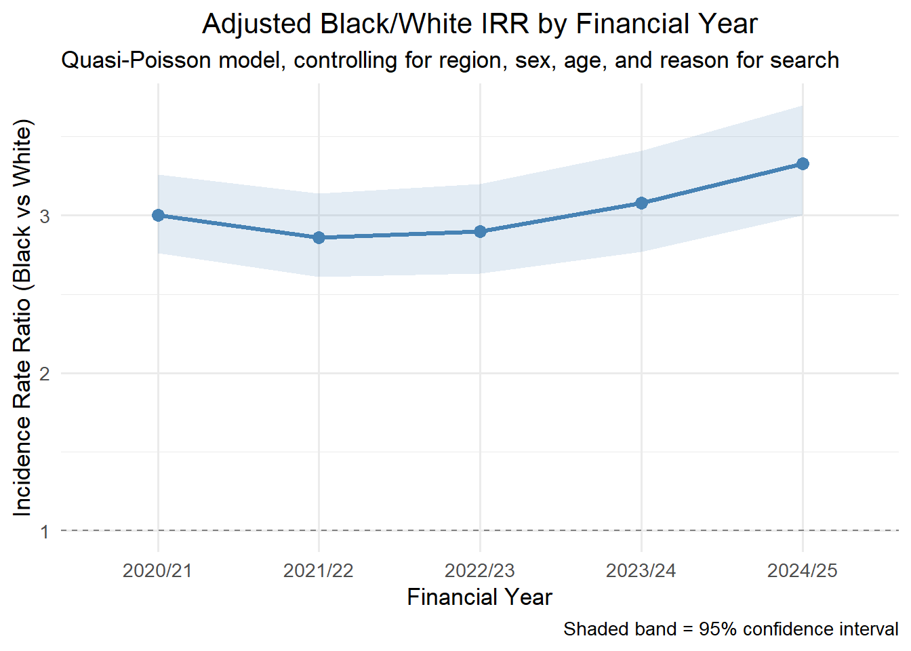
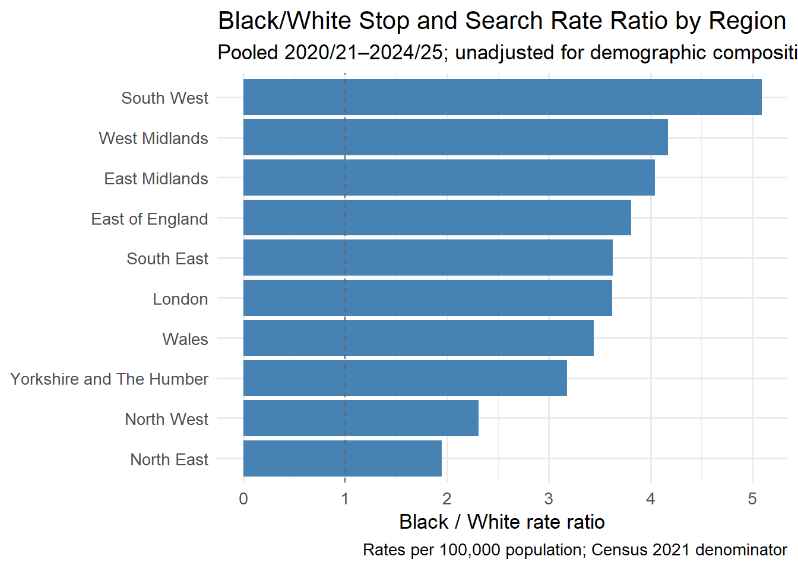
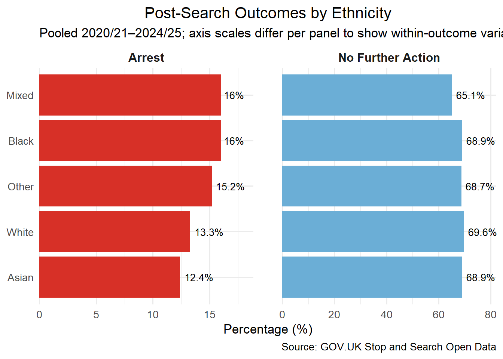
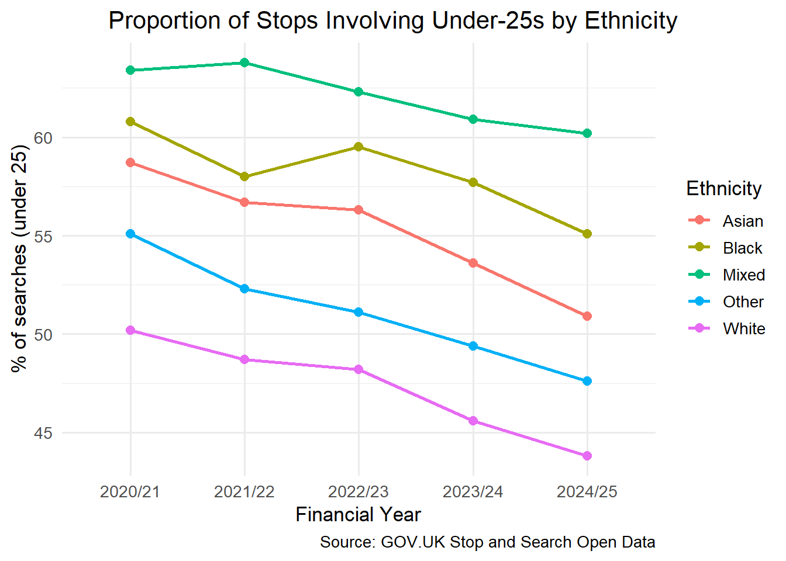
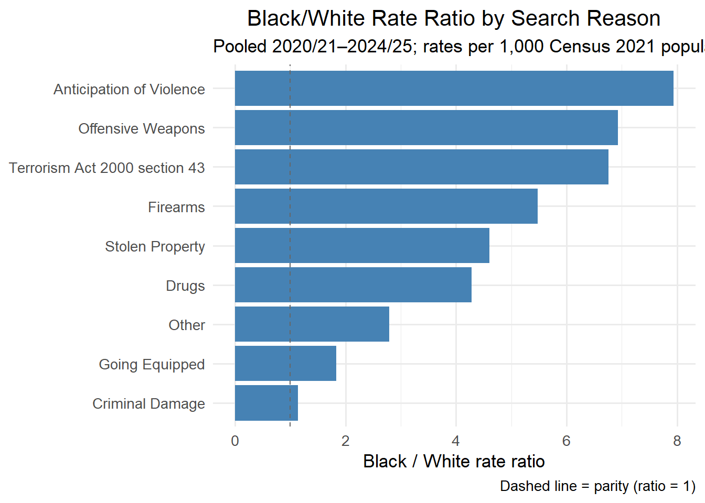
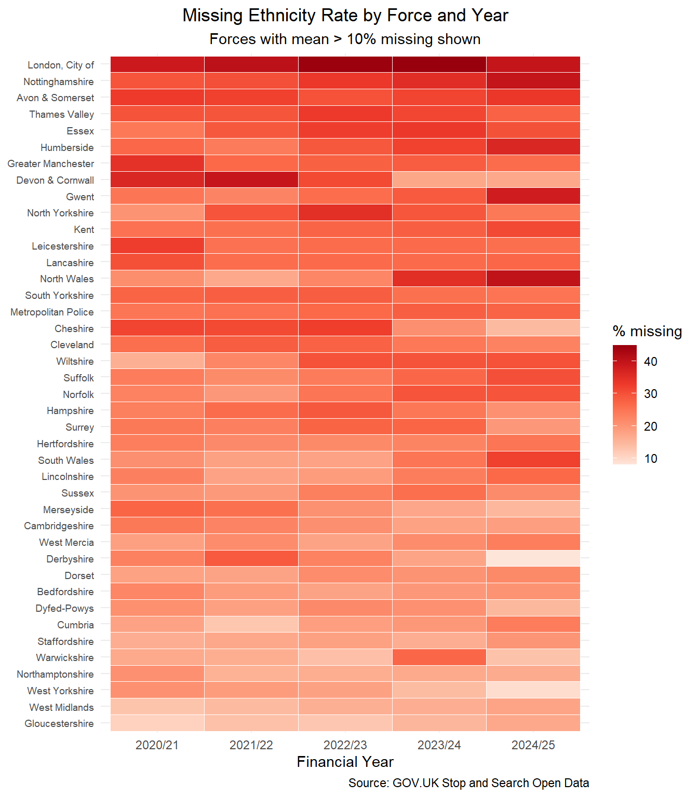

5 Results
The results presented in this section provide a comprehensive analysis of stop-and-search data in England and Wales. Leveraging both descriptive statistics and advanced statistical models, we explore the key patterns, disparities, and trends in stop-and-search practices across demographic, geographic, and temporal dimensions. The findings highlight significant disproportionalities in stop-and-search rates among ethnic groups, with a particular focus on the Black or Black British population. Additionally, the results provide insights into the influence of factors such as age, sex, region, and reason for search on stop-and-search frequencies. This section concludes with the application of machine learning techniques, specifically random forests, to uncover additional patterns and establish a framework for prediction.
5.1 Census data
The analysis of census data provides critical insights into the demographic composition of England and Wales. This section examines the distribution of ethnic groups across English regions, highlighting variations in population proportions and regional disparities. The results form the basis for understanding broader demographic patterns that intersect with stop-and-search practices. Key metrics such as mean percentages, standard deviations, and ranges are calculated to quantify these distributions and inform subsequent analyses.
5.1.1 Ethnic Composition Across English Regions
The table below summarizes the composition of ethnic groups across English regions, showing the mean percentage, standard deviation (SD), and range (minimum to maximum) for each group. This provides an overview of the variability in ethnic group proportions across regions.
| Ethnic Group | mean | sd | min | max |
|---|---|---|---|---|
| Asian or Asian British | 8.2 | 5.4 | 2.8 | 20.7 |
| Black or Black British | 3.4 | 3.7 | 0.9 | 13.5 |
| Mixed | 2.6 | 1.2 | 1.3 | 5.7 |
| Other Ethnic Group | 1.8 | 1.6 | 0.9 | 6.3 |
| White | 84.0 | 11.8 | 53.8 | 93.8 |
The data highlights significant disparities between ethnic groups. Notably, the average proportion of individuals identifying as Black or Black British is 3.4%, with regional variation ranging from 0.9% to 13.5%. In contrast, the White group, which has the largest mean proportion at 84%, also shows variability, ranging from 53.8% to 93.8%. These patterns underline the diverse ethnic composition across regions, particularly the stark contrast between Black and White populations.
5.1.2 Population Distribution by Ethnic Group and Region
The table below summarizes the total population distribution by ethnic group across regions in England and Wales, based on census data. Population counts are presented in thousands, providing a clear view of regional demographics. The summary includes total counts for each ethnic group and highlights regional variations, which are key to understanding the geographic diversity of the population.
| region | Asian or Asian British | Black or Black British | Mixed | Other Ethnic Group | White |
|---|---|---|---|---|---|
| East Midlands | 391.1 | 130.0 | 117.2 | 61.9 | 4179.8 |
| Eastern | 405.9 | 185.0 | 179.7 | 86.2 | 5478.4 |
| London | 1817.6 | 1188.4 | 505.8 | 556.8 | 4731.2 |
| North East | 98.0 | 26.6 | 33.3 | 26.3 | 2462.7 |
| North West | 622.7 | 173.9 | 163.3 | 110.2 | 6347.4 |
| South East | 650.5 | 221.6 | 260.9 | 135.7 | 8009.4 |
| South West | 159.2 | 69.6 | 114.1 | 48.7 | 5309.6 |
| Wales | 89.0 | 27.6 | 48.6 | 26.5 | 2915.9 |
| West Midlands | 794.3 | 269.0 | 178.2 | 124.2 | 4585.0 |
| Yorkshire and the Humber | 487.1 | 117.6 | 117.0 | 79.1 | 4680.0 |
| Total | 5515.4 | 2409.3 | 1718.1 | 1255.6 | 48699.4 |
The census data reveals that the total population of individuals identifying as Black or Black British across all regions is 2,409 thousand, compared to 48,699 thousand for the White group. In London, which has the highest concentration of Black or Black British individuals among all regions, this group accounts for 1,188 thousand, while the White population in London is 4,731 thousand.
The region with the largest White population is South East, while London has the highest Black or Black British population outside London. These figures highlight the substantial geographic and demographic diversity captured in the census data.
5.1.3 Geographic Distribution of the Black or Black British Population
The map below visualizes the geographic distribution of individuals identifying as Black or Black British across regions in the UK, based on census data. It represents the proportion of this ethnic group within each region as a percentage of the total regional population, highlighting spatial patterns and regional disparities.

The map illustrates substantial regional variability in the proportion of individuals identifying as Black or Black British. The region with the highest proportion is London, where this group accounts for 13.5% of the total population. In contrast, the region with the lowest proportion is Wales, at just 0.9%.
These results emphasize the uneven distribution of the Black population across the UK, reflecting broader patterns of settlement, migration, and urbanization.
5.2 Stop and Search data
This section examines police stop and search activities across England and Wales. This data includes searches conducted under key legislations, specifically Section 1 of the Police and Criminal Evidence Act (PACE) and Section 60 of the Criminal Justice and Public Order Act (CJPOA). By analyzing annual trends, legislative frameworks, and demographic characteristics, this section aims to provide insights into the scale and patterns of stop and search practices. The results inform subsequent analyses of disparities and contributing factors.
5.2.1 Total Stop and Searches by Year
The table below details the annual total of stop and searches conducted in England and Wales under Section 1 of the Police and Criminal Evidence Act (PACE) and Section 60 of the Criminal Justice and Public Order Act (CJPOA). This summary highlights year-on-year trends and the overall scale of these police powers.
| Financial Year | Total Searches |
|---|---|
| 2020/21 | 714,914 |
| 2021/22 | 530,970 |
| 2022/23 | 547,000 |
| 2023/24 | 536,151 |
| 2024/25 | 528,242 |
The data shows that the highest number of stop and searches was conducted in the financial year 2020/21, with a total of 714,914 searches. In contrast, the financial year with the lowest number of searches was 2024/25, with 528,242 searches.
These figures reflect changes in policing strategies and legal contexts, as well as broader socio-political factors influencing the use of stop and search powers over time.
The totals above match the figures published by the UK Government and include all recorded stop and searches under PACE s.1 and CJPOA s.60. The disparity analysis presented in the rest of this report uses a smaller analysis sample that excludes three categories of records that cannot be assigned to a demographic group or geographic denominator (see Section 4.3 for details):
- Vehicle searches: no person-level demographics are recorded.
- British Transport Police (region 0): no Census population denominator exists for BTP.
- “Not Stated” ethnicity:these records cannot be attributed to any ethnic group for rate calculations.
| Financial Year | Published Total | Analysis Sample | Excluded | % Retained |
|---|---|---|---|---|
| 2020/21 | 714,914 | 555,915 | 158,999 | 77.8 |
| 2021/22 | 530,970 | 405,946 | 125,024 | 76.5 |
| 2022/23 | 547,000 | 411,353 | 135,647 | 75.2 |
| 2023/24 | 536,151 | 404,636 | 131,515 | 75.5 |
| 2024/25 | 528,242 | 402,376 | 125,866 | 76.2 |
The analysis sample retains approximately 76% of all searches across years. All disparity rates, IRRs, and dashboard figures are based on this analysis sample.
Note that the stop and search dataset contains some missing data, primarily in the officer_defined_ethnicity variable. Other missing values occur because certain searches were related to vehicles, which are not included in this analysis. As a result, the percentage of truly missing data in the original dataset is 4.6%. These missing values were handled appropriately to ensure robust analysis.
5.2.2 Disparity Rates Relative to White Individuals
The table below presents disparity rates for stop and searches relative to White individuals across different financial years. Disparity rates indicate how much more (or less) likely individuals from other ethnic groups are to be stopped and searched compared to White individuals. These rates are derived by comparing the stop-and-search rate per population for each ethnic group against the rate for White individuals.
| Financial Year | Asian or Asian British | Black or Black British | Mixed | Other Ethnic Group |
|---|---|---|---|---|
| 2020/21 | 1.85 | 5.49 | 1.67 | 1.24 |
| 2021/22 | 1.59 | 4.81 | 1.67 | 1.21 |
| 2022/23 | 1.43 | 4.08 | 1.64 | 1.26 |
| 2023/24 | 1.34 | 3.62 | 1.62 | 1.35 |
| 2024/25 | 1.39 | 3.65 | 1.74 | 1.47 |
| Average | 1.52 | 4.33 | 1.67 | 1.31 |
The data reveals that individuals identifying as Black or Black British consistently experience the highest disparity rates in stop and searches compared to White individuals. The highest disparity was recorded in 2020/21, with a relative rate of 5.49, while the lowest disparity occurred in 2023/24, at 3.62. On average, the disparity rate for this group across all financial years is 4.33.
These figures underscore the significant disparities faced by Black individuals in stop and search practices. Similar trends are observed for other ethnic groups, though with lower disparity rates compared to the Black or Black British group.
The most recent year, 2024/25, yields a Black/White disparity rate of 3.6× (from 3.65). This is the unadjusted figure, calculated directly from search counts divided by Census 2021 population denominators with no covariates controlled,d is the number shown on the interactive dashboard. The adjusted incidence rate ratio from the Poisson model (see Section 5.6) is lower because the model accounts for differences in regional composition, sex, age, and search type across ethnic groups; the gap between the two measures reflects those compositional differences rather than any inconsistency in the data.
5.2.3 Outcome and Link
The question we want to investigate here is whether stop and search results in successful motives. We have removed “Unknown link” and “Unknown whether article found.” Then, we create a new column called “success” - if link is “Linked,” it is successful, otherwise, it is not.
The overall success ratio is: 34.5%.
5.3 Modelling
This section outlines the statistical modelling approach applied to analyze stop and search data. Multiple models were constructed and evaluated, each targeting specific aspects of the data while considering methodological rigor. The focus was on understanding disparities across financial years, regions, and ethnic groups, controlling for key covariates such as sex, age group, and reason for search.
5.3.1 Overview of Models Tested
- Model 1: Simple Linear Regression
- A baseline linear regression model was fitted with the stop-and-search rate (
rate) as the dependent variable. - Independent variables included financial year, region, ethnicity, sex, age group, and reason for search.
- Diagnostics revealed significant heteroscedasticity, making this model unsuitable.
- A baseline linear regression model was fitted with the stop-and-search rate (
- Model 2: Log-Transformed Linear Regression
- To address heteroscedasticity, a logarithmic transformation of the rate (
log(rate)) was applied. - The transformed model demonstrated improved fit and approximate normality in residuals.
- To address heteroscedasticity, a logarithmic transformation of the rate (
- Mixed Linear Model
- A mixed-effects model was considered, treating financial year as a random effect to account for potential year-specific variability.
- However, the random effect’s variance was close to zero, indicating that this added complexity was unnecessary.
- Generalized Linear Model (GLM) with Offset
- A Poisson GLM with a log link function was employed, using the number of searches as the dependent variable and the log population as an offset.
- This model was particularly relevant for adjusting for population size across regions and demographics.
- All parameters were highly significant (
p < 0.0001), and the effect sizes for ethnic groups were consistent with findings from prior research.
- Model Evaluation
- Pseudo-R² by Cohen was used to assess the GLM’s fit. The pseudo-R² value confirmed the model’s adequacy for explaining variability in the data.
5.3.2 Key Considerations
- Model Selection: While multiple models were tested, the GLM with an offset was identified as the most appropriate for the dataset, balancing interpretability and statistical validity.
- Diagnostics: Each model was assessed for assumptions such as normality of residuals, heteroscedasticity, and random effects variance to ensure robustness.
- Significance of Covariates: Across models, ethnicity consistently emerged as a significant factor, supporting the focus on disparities in stop-and-search practices.
These models provide a robust framework for understanding patterns and disparities in stop-and-search data, and they form the foundation for further statistical and interpretive analysis.
Based on the results of the evaluated models, a Poisson regression with a population offset was selected as the final model. The following section delves into the rationale, structure, and key findings of the chosen model.
5.4 Chosen Model
5.4.1 Overview of the Poisson Regression
The Poisson regression model with an offset for population size was selected as the most appropriate approach for this analysis. This model accounts for varying population sizes across regions, allowing for a fair comparison of stop-and-search rates. The dependent variable is the total number of stop and searches, with independent variables including financial year, region, ethnicity, sex, age group, and reason for search. Reference levels for categorical variables are:
- Financial Year: 2020/21
- Region: East Midlands
- Ethnicity: White
- Sex: Female
- Age Group: 25 and above
- Reason for Search: Non-drug-related
5.4.2 Model results
The table below summarizes the results of the Poisson regression model analyzing the frequency of stop and searches across England and Wales. The raw coefficients from the model (log-scale) provide statistical estimates for the association between each variable and the expected log count of stop and searches.
However, for ease of interpretation, these coefficients are exponentiated to present rate ratios, which quantify the multiplicative effect of each variable relative to the baseline categories. For instance, a rate ratio greater than 1 indicates a higher likelihood of stop and searches compared to the baseline category, while a rate ratio less than 1 indicates a lower likelihood. Baseline levels for the categorical variables are: financial year 2020/21, region East Midlands, ethnicity White, sex Female, age group 25 and above, and reason for search non-drug-related.
The following tables first present the raw coefficients for statistical rigor, followed by the exponentiated coefficients (rate ratios) for practical interpretation.
5.4.2.1 Table Code: Raw Coefficients
| Term | Log Coefficient | Std Error | Z | P-Value | Lower CI | Upper CI |
|---|---|---|---|---|---|---|
| (Intercept) | -9.524 | 0.0602099 | -158.174323 | 0.000 | -9.643 | -9.407 |
| financial_year2021/22 | -0.319 | 0.0282388 | -11.306597 | 0.000 | -0.375 | -0.264 |
| financial_year2022/23 | -0.307 | 0.0281390 | -10.915751 | 0.000 | -0.362 | -0.252 |
| financial_year2023/24 | -0.332 | 0.0283447 | -11.723599 | 0.000 | -0.388 | -0.277 |
| financial_year2024/25 | -0.365 | 0.0286146 | -12.740845 | 0.000 | -0.421 | -0.309 |
| region_cleanEast of England | 0.436 | 0.0601634 | 7.254569 | 0.000 | 0.319 | 0.555 |
| region_cleanLondon | 1.409 | 0.0525822 | 26.801986 | 0.000 | 1.308 | 1.514 |
| region_cleanNorth East | 0.618 | 0.0702577 | 8.793727 | 0.000 | 0.480 | 0.756 |
| region_cleanNorth West | 1.374 | 0.0531494 | 25.854011 | 0.000 | 1.271 | 1.480 |
| region_cleanSouth East | 0.361 | 0.0575411 | 6.280358 | 0.000 | 0.250 | 0.475 |
| region_cleanSouth West | -0.091 | 0.0691195 | -1.310296 | 0.190 | -0.226 | 0.045 |
| region_cleanWales | 0.654 | 0.0670340 | 9.752562 | 0.000 | 0.523 | 0.785 |
| region_cleanWest Midlands | 0.369 | 0.0611492 | 6.027697 | 0.000 | 0.249 | 0.489 |
| region_cleanYorkshire and The Humber | 0.649 | 0.0596301 | 10.883978 | 0.000 | 0.533 | 0.767 |
| ethnicityAsian | 0.156 | 0.0306058 | 5.105050 | 0.000 | 0.096 | 0.216 |
| ethnicityBlack | 1.106 | 0.0290505 | 38.068460 | 0.000 | 1.049 | 1.163 |
| ethnicityMixed | 0.306 | 0.0488384 | 6.256767 | 0.000 | 0.209 | 0.400 |
| ethnicityOther | -0.069 | 0.0635000 | -1.079808 | 0.280 | -0.195 | 0.054 |
| sexMale | 2.080 | 0.0296314 | 70.190904 | 0.000 | 2.022 | 2.138 |
| age_under25Under 25 | 0.025 | 0.0186159 | 1.361190 | 0.174 | -0.011 | 0.062 |
| reason_drugsDrugs | 0.573 | 0.0193849 | 29.577409 | 0.000 | 0.535 | 0.611 |
5.4.2.2 Table Code: Exponentiated Coefficients (Rate Ratios)
| Term | Rate Ratio | Lower 95% CI | Upper 95% CI |
|---|---|---|---|
| (Intercept) | 0.000 | 0.000 | 0.000 |
| financial_year2021/22 | 0.727 | 0.687 | 0.768 |
| financial_year2022/23 | 0.736 | 0.696 | 0.777 |
| financial_year2023/24 | 0.717 | 0.678 | 0.758 |
| financial_year2024/25 | 0.694 | 0.657 | 0.734 |
| region_cleanEast of England | 1.547 | 1.376 | 1.742 |
| region_cleanLondon | 4.093 | 3.697 | 4.544 |
| region_cleanNorth East | 1.855 | 1.616 | 2.129 |
| region_cleanNorth West | 3.952 | 3.565 | 4.391 |
| region_cleanSouth East | 1.435 | 1.283 | 1.608 |
| region_cleanSouth West | 0.913 | 0.798 | 1.046 |
| region_cleanWales | 1.923 | 1.686 | 2.193 |
| region_cleanWest Midlands | 1.446 | 1.283 | 1.631 |
| region_cleanYorkshire and The Humber | 1.914 | 1.704 | 2.153 |
| ethnicityAsian | 1.169 | 1.101 | 1.241 |
| ethnicityBlack | 3.022 | 2.854 | 3.198 |
| ethnicityMixed | 1.357 | 1.232 | 1.492 |
| ethnicityOther | 0.934 | 0.823 | 1.055 |
| sexMale | 8.003 | 7.555 | 8.486 |
| age_under25Under 25 | 1.026 | 0.989 | 1.064 |
| reason_drugsDrugs | 1.774 | 1.708 | 1.843 |
5.4.2.3 Key Findings
The results show significant disparities in stop-and-search likelihoods. For instance, individuals identifying as Black or Black British are 3.02 times more likely to be stopped and searched compared to White individuals, with a 95% confidence interval of (2.85, 3.2). Similarly, males are 8 times more likely to be stopped and searched than females, highlighting a significant gender disparity.
London stands out with the highest regional rate: individuals there are 4.09 times as likely to be stopped and searched as those in the East Midlands (95% CI: 3.7–4.54).
These findings underscore critical disparities in stop-and-search practices across demographic and geographic dimensions.
5.4.3 Model Coefficients: Interpretation
This analysis evaluates the association between demographic, temporal, and geographic factors and police stop-and-search frequencies in England and Wales using a Poisson regression model. The model includes an offset for population size to account for differences in regional populations, providing rate ratios for stop-and-search frequencies across groups.
Key variables were encoded for interpretability: age group was binary, with “Under 25” for individuals aged 10–24 and “25 and over” for those 25 and above; reason for search was binary, with “Drugs” for drug-related stops and “Non-drugs” for other reasons. Baseline levels for categorical variables include: financial year 2020/21, region East Midlands, ethnicity White, sex Female, age group 25 and above, and reason for search non-drug-related. All coefficients are exponentiated to represent rate ratios.
Each rate ratio indicates the multiplicative effect of a variable on the likelihood of stop and search, relative to the baseline. Values greater than 1 represent increased likelihood, while values below 1 signify decreased likelihood.
5.4.3.1 Coefficients and Interpretations
5.4.3.1.1 Financial Year
- 2021/22: The rate ratio for 2021/22 is 0.73 (95% CI: 0.69–0.77), indicating that stop-and-search frequencies were approximately 0.73 times as likely compared to 2020/21.
- 2022/23: The rate ratio for 2022/23 is 0.74 (95% CI: 0.7–0.78).
These results suggest a consistent decrease in stop-and-search activities over time.
5.4.3.1.2 Region (Relative to East Midlands)
Most regions show higher stop-and-search rates than East Midlands, with London standing out. For instance: - London: Rate ratio of 4.09 (95% CI: 3.7–4.54). - South East: Rate ratio of 1.44 (95% CI: 1.28–1.61).
The variation across regions likely reflects differences in policing practices, crime profiles, and population density.
5.4.3.1.3 Ethnicity (Relative to White)
Ethnic minorities showed significantly different rates of stop and search compared to White individuals: - Black or Black British: Rate ratio of 3.02 (95% CI: 2.85–3.2), indicating a 202.2% higher likelihood of being stopped and searched.
5.4.3.1.4 Sex (Relative to Female)
- Male: Rate ratio of 8 (95% CI: 7.55–8.49). Men are significantly more likely to be stopped and searched compared to women.
5.4.3.1.5 Age Group (Relative to Age 25+)
- Under 25: Rate ratio of 1.03 (95% CI: 0.99–1.06), reflecting a slightly increased likelihood for younger individuals.
5.4.4 Model Fit and Diagnostics
- Pseudo R-squared (Cohen’s): The pseudo R-squared value of 0.884 indicates that the model explains approximately 88.4% of the variability in stop and search counts, suggesting a strong fit. This high explanatory power supports the model’s validity in identifying and quantifying the associations between stop and search practices and demographic, geographic, and temporal factors.
The residual deviance (342,749.3 on 1950 degrees of freedom) indicates a good model fit, with some remaining variability potentially attributable to unobserved factors. The estimated dispersion parameter is 181.8, confirming severe overdispersion; standard errors are scaled accordingly by the Quasi-Poisson family (see Methodology). AIC is not defined for Quasi-Poisson models.
- Interaction model (ethnicity × financial year): To account for part of this overdispersion and allow ethnic disparities to vary over time, we fitted an extended model including an
ethnicity × financial_yearinteraction. The interaction model reduces the dispersion parameter from 181.8 to 174.9 and improves the pseudo R² from 88.4% to 88.8%. An F-test confirms the interaction terms are jointly significant (p < 0.001), indicating that ethnic disparities have shifted meaningfully across financial years. Despite this improvement, the remaining overdispersion (\(\hat{\phi} \approx\) 175) reflects heterogeneity at the force level and other unmodelled factors,common feature of aggregate policing data. The Quasi-Poisson framework ensures that all reported confidence intervals and significance tests remain conservative regardless.
5.4.5 Addressing the Project Questions
5.4.6 Addressing the Project Questions
Do Black People in Metropolitan Areas Experience More Drug Stop and Searches?
To address this question, we analyze the combined effects of ethnicity (Black or Black British), region (London as a proxy for metropolitan area), and reason for search (drug-related):
- Ethnicity (Black or Black British): The rate ratio is 3.02 (95% CI: 2.85–3.2), indicating Black individuals are approximately 3.02 times more likely to be stopped and searched compared to White individuals.
- Region (London): The rate ratio for London relative to East Midlands is 4.09 (95% CI: 3.7–4.54), confirming that London has far higher search rates than the baseline region.
- Reason for Search (Drug-Related): The rate ratio is 1.77 (95% CI: 1.71–1.84), indicating drug-related searches are approximately 1.77 times more likely than non-drug-related searches.
Combined effect: The multiplicative rate effect for Black individuals in London during drug-related stops is approximately 21.95 times that for White individuals in the East Midlands for non-drug-related reasons, holding sex and age constant.
What is the Relationship Between Young People Under 25 and Drug Stops?
For this question, we examine the effects of age group (under 25) and reason for search (drug-related):
- Age Group (Under 25): The rate ratio is 1.03 (95% CI: 0.99–1.06), indicating individuals under 25 are approximately 1.03 times more likely to be stopped and searched compared to individuals aged 25 and above.
- Reason for Search (Drug-Related): The rate ratio is 1.77 (95% CI: 1.71–1.84), suggesting that drug-related searches are approximately 1.77 times more likely than non-drug-related searches.
Combined effect: The multiplicative rate effect for individuals under 25 in drug-related stops is approximately 1.82 times more likely than for older individuals for non-drug-related reasons.
5.4.7 Implications of Findings
This analysis addresses two primary questions regarding drug-related stop-and-search practices in metropolitan areas:
Do Black Males under 25 Years of Age in Metropolitan Areas Experience More Drug Stop-and-Searches?
How Does This Compare to Black Females, White Females, and White Males under 25 in Metropolitan Areas, Specifically When the Reason for Stop and Search is Drug-Related?
5.4.7.1 1. Black Males Under 25 in Metropolitan Areas
The model results indicate that Black or Black British males under 25 years of age in metropolitan areas are significantly more likely to experience drug-related stop-and-search encounters. Specifically, this group serves as the reference point for comparison against other demographic groups.
5.4.7.2 2. Comparative Analysis Across Demographic Groups
The model’s statistical reference cell is a White female aged 25+ stopped for non-drug reasons in the East Midlands (i.e. the intercept). While useful for model construction, the most policy-relevant comparison is between individuals of different ethnicities who share the same sex, age, and search reason,olating the ethnicity effect. The table below re-expresses the combined rate ratios in two ways: first relative to a comparable White individual (same sex, age, and reason), then relative to the statistical reference cell.
| Demographic Profile | Black/White Ratio (same sex, age, reason) | vs Reference Cell (White Female, 25+, non-drug) |
|---|---|---|
| Black Male Under 25, Drug Stop | 3.02× | 44.01× |
| Black Male 25+, Drug Stop | 3.02× | 42.91× |
| White Male Under 25, Drug Stop | --- | 14.56× |
| White Male 25+, Drug Stop | --- | 14.2× |
| Black Female 25+, Drug Stop | 3.02× | 5.36× |
| White Female 25+, Drug Stop | --- | 1.77× |
Interpretation:
Because this is a main-effects (additive on the log scale) model, the ethnicity multiplier is constant: a Black individual is 3.02\(\times\) more likely to be stopped than a White individual of the same sex, age group, and search reason. This 3.02\(\times\) factor is the central measure of racial disparity.
A Black male under 25 stopped for drug-related reasons has a combined rate ratio of 44.01 relative to the reference cell,t 3.02\(\times\) relative to a White male under 25 stopped for the same reason. The difference between 44.01 and 3.02 is entirely explained by the sex (8\(\times\)), age (1.03\(\times\)), and drug (1.77\(\times\)) effects, which affect Black and White individuals equally in this model.
White Males Under 25 for Drugs have a rate ratio of 14.56 versus the reference cell, highlighting that sex and drug effects are substantial independent of ethnicity,t the ethnicity gap roughly triples the rate for Black individuals in every combination.
5.4.8 Policy Implications
The identified disparities necessitate targeted interventions to ensure equitable policing practices:
- Policy Review and Reform:
- Implement Equitable Policing Guidelines: Develop and enforce guidelines that minimize racial and gender biases in stop-and-search operations.
- Data Transparency: Mandate comprehensive data collection and public reporting on stop-and-search encounters to monitor and address disparities.
- Training and Awareness:
- Bias Training: Enhance training programs for law enforcement to recognize and mitigate unconscious biases that contribute to disproportionate targeting of specific demographic groups.
- Cultural Competency: Foster cultural competency among police officers to improve interactions with diverse communities.
- Community Engagement:
- Build Trust: Engage with communities, particularly among young Black males, to build trust and cooperation between law enforcement and the populations they serve.
- Feedback Mechanisms: Establish channels for community members to provide feedback and report instances of discriminatory practices without fear of retaliation.
By addressing these areas, policymakers and law enforcement agencies can work towards more fair and just policing strategies, ensuring that stop-and-search practices do not disproportionately affect specific demographic groups and that all individuals are treated equitably under the law.
5.5 Random Forest Model: Machine Learning Approach

A random forest model was used to identify the most influential factors associated with total stop-and-search activity across financial years, regions, and demographic groups. This approach complements the regression analysis by revealing complex, non-linear relationships between predictors and total searches. The random forest was trained on demographic and contextual variables, including financial year, region, ethnicity, sex, age group, reason for search, and population size, to determine the relative importance of each factor in predicting the total number of stop-and-searches. The variable importance measures (based on %IncMSE) highlight key factors that influence stop-and-search volume and allow an in-depth exploration of the project’s objectives.
5.5.1 Variable Importance and Interpretation
The variable importance plot (Figure X) shows each predictor’s contribution to the model, measured by % Increase in Mean Squared Error (%IncMSE). Key findings from the random forest analysis include:
- Sex:
- Sex emerged as the most influential predictor (%IncMSE = 61.8), the single strongest driver of search volume in the model. Consistent with the regression findings, males are disproportionately represented in stop-and-search activity. This alignment across model types underscores the persistent gender gap in policing.
- Population:
- Population size was the second most important predictor (%IncMSE = 36.8). Areas with larger populations experience higher total search counts, reflecting the concentration of searches in densely populated regions.
- Region:
- Region also displayed a high %IncMSE, suggesting that geographic location strongly influences stop-and-search activity. This regional variation likely reflects different policing strategies and priorities across England and Wales. The substantial impact of region on search volume suggests that certain areas are more intensely policed, which may be related to local crime rates, population density, or policy differences.
- Ethnicity:
- Ethnicity emerged as an influential factor, with notable %IncMSE values. Within the random forest model, Black or Black British individuals were particularly associated with higher search counts, reflecting the model’s capacity to capture ethnic disparities in policing. The importance of ethnicity aligns with the project’s focus on identifying demographic disparities in stop-and-search practices, confirming that specific ethnic groups are more frequently targeted in police searches.
- Financial Year and Reason for Search:
- Financial year and reason for search also contributed to the prediction of total searches, though to a lesser extent than population, sex, and region. The financial year variable’s influence suggests temporal changes in policing activity, potentially linked to policy adjustments or shifts in crime prevention focus over time. Drug-related stops (indicated by the reason for search variable) were also predictive of higher search counts, suggesting that specific search reasons contribute to variation in stop-and-search volume.
- Age Group:
- Age group exhibited a low and even negative %IncMSE, indicating that age group alone may not meaningfully enhance prediction accuracy in this model. This contrasts with the regression analysis, where age group had a positive association with search counts. The random forest results suggest that age might interact with other factors (like ethnicity or reason for search) rather than being a primary predictor of search volume independently.
5.5.2 Implications for Project Objectives
The random forest model findings align with the project’s objectives, providing detailed insights into factors influencing total stop-and-search counts and validating key areas of demographic disparity. The high importance of sex, population, and region reveals structural factors that drive search volumes across England and Wales, with clear implications for regional and demographic disparities in policing. The consistent influence of ethnicity across both the random forest and regression models underscores the model’s reliability in identifying areas where certain groups are disproportionately affected by stop-and-search practices.
In summary, the random forest analysis provides a robust exploration of the factors driving total stop-and-search volume. By identifying sex, population, region, and ethnicity as major predictors, the model highlights demographic and regional differences in policing practices. This evidence-based approach supports the project’s goal to uncover disparities and guide recommendations for more equitable policing policies across demographic groups.
5.6 Five-Year Disparity Trend
The sections above present the pooled model results. Here we examine how the adjusted disparity, controlling for region, sex, age, and reason for search, has evolved year by year over the five-year period 2020/21–2024/25, using pre-computed per-year Quasi-Poisson models.
| Financial Year | Adjusted IRR | 95% CI |
|---|---|---|
| 2020/21 | 3.00 | (2.76–3.26) |
| 2021/22 | 2.86 | (2.61–3.14) |
| 2022/23 | 2.90 | (2.63–3.2) |
| 2023/24 | 3.08 | (2.77–3.41) |
| 2024/25 | 3.33 | (3–3.7) |

The adjusted IRR for Black individuals relative to White individuals shows a U-shaped trend: falling slightly in 2021/22 (IRR = 2.86) and 2022/23 (IRR = 2.9) before rising sharply to 3.08 in 2023/24 and reaching 3.33 (95% CI: 3–3.7) in 2024/25. The 2024/25 figure is statistically distinguishable from the 2020/21 baseline (IRR = 3; 95% CI: 2.76–3.26), indicating a real and significant worsening of the adjusted disparity over the five-year period.
This worsening is all the more striking because it occurs against a backdrop of falling overall search volumes: raw Black search rates per 1,000 population have declined substantially since 2020/21, but have fallen more slowly than White rates, resulting in a widening relative gap once demographic and geographic composition is held constant.
5.7 Regional Force Rankings
| Region | Black rate (per 100k) | White rate (per 100k) | Black/White ratio |
|---|---|---|---|
| South West | 12.2 | 2.4 | 5.09 |
| West Midlands | 15.4 | 3.7 | 4.17 |
| East Midlands | 10.9 | 2.7 | 4.04 |
| East of England | 12.9 | 3.4 | 3.81 |
| South East | 16.3 | 4.5 | 3.63 |
| London | 24.7 | 6.8 | 3.62 |
| Wales | 13.6 | 4.0 | 3.44 |
| Yorkshire and The Humber | 14.3 | 4.5 | 3.18 |
| North West | 37.6 | 16.3 | 2.31 |
| North East | 12.9 | 6.6 | 1.95 |

The regional analysis reveals striking variation in the unadjusted Black/White disparity. The South West has the highest ratio at 5.09×, substantially exceeding London (3.62×). This is notable given that London is typically assumed to be the focal point of ethnic disproportionality. The North East has the lowest ratio (1.95×), though it remains above parity. The South West anomaly is discussed further in the Discussion chapter.
The North West shows extremely high absolute rates for all ethnic groups (Black: 37.6 per 100,000; White: 16.3 per 100,000), suggesting a general pattern of intensive policing rather than ethnicity-specific targeting, reflected in its relatively lower ratio of 2.31×.
5.8 Outcome Disparity by Ethnicity
A key indicator of whether stop and search powers are deployed appropriately is the post-search outcome distribution. If the evidential threshold for initiating a search is genuinely equivalent across ethnic groups, we would expect broadly similar outcome profiles.
| ethnicity | Arrest (%) | Community Resolution (%) | No Further Action (%) |
|---|---|---|---|
| Asian | 12.4 | 9.5 | 68.9 |
| Black | 16.0 | 8.7 | 68.9 |
| Mixed | 16.0 | 10.6 | 65.1 |
| Other | 15.2 | 9.6 | 68.7 |
| White | 13.3 | 7.9 | 69.6 |

Across all ethnic groups, No Further Action (NFA) is by far the most common outcome, indicating that the majority of searches do not result in any enforcement action. The NFA rate for Black individuals (68.9%) is marginally lower than for White individuals (69.6%), which might appear reassuring. However, the arrest rate tells a different story: Black individuals have one of the highest arrest rates at 16% (tied with Mixed), compared to 13.3% for White individuals and 12.4% for Asian individuals. This differential is consistent with searches against Black individuals being somewhat more likely to yield enforcement action; yet given the substantially higher stop rate, it also implies that a large number of Black individuals are searched without justification. The implications of this pattern are discussed in the Discussion chapter.
5.9 Age by Ethnicity Interaction
| Financial Year | Asian | Black | Mixed | Other | White |
|---|---|---|---|---|---|
| 2020/21 | 58.7 | 60.8 | 63.4 | 55.1 | 50.2 |
| 2021/22 | 56.7 | 58.0 | 63.8 | 52.3 | 48.7 |
| 2022/23 | 56.3 | 59.5 | 62.3 | 51.1 | 48.2 |
| 2023/24 | 53.6 | 57.7 | 60.9 | 49.4 | 45.6 |
| 2024/25 | 50.9 | 55.1 | 60.2 | 47.6 | 43.8 |

Black individuals who are stopped and searched are more likely to be under 25 than any other ethnic group. In 2024/25, 55.1% of all searches targeting Black individuals involved someone under 25, compared with 43.8% for White individuals. This age concentration has remained broadly stable over the five years, suggesting that the compounded disadvantage faced by young Black men in stop and search encounters is a persistent structural feature rather than a short-term fluctuation.
5.10 Racial Skew by Search Reason
Not all search reasons carry the same racial disparity. This section asks: which reason for search shows the greatest Black/White rate gap? Rates are computed per 1,000 population using the 2021 Census as denominator, pooled across all five years.
| Reason for Search | Black rate (per 1,000) | White rate (per 1,000) | Black / White ratio |
|---|---|---|---|
| Anticipation of Violence | 1.88 | 0.24 | 7.94 |
| Offensive Weapons | 26.91 | 3.88 | 6.93 |
| Terrorism Act 2000 section 43 | 0.07 | 0.01 | 6.76 |
| Firearms | 1.21 | 0.22 | 5.48 |
| Stolen Property | 13.64 | 2.96 | 4.60 |
| Drugs | 81.23 | 19.00 | 4.28 |
| Other | 1.76 | 0.63 | 2.79 |
| Going Equipped | 5.01 | 2.74 | 1.83 |
| Criminal Damage | 0.58 | 0.50 | 1.14 |

The search reason with the highest racial disparity is Anticipation of Violence (Black/White ratio: 7.94×). Drug-related stops carry a ratio of 4.28×, while searches for offensive weapons or articles for use in crime show a ratio of 6.93×. The fact that disparity is pronounced across multiple search reasons, not just drugs, indicates that the over-representation of Black individuals in stop and search cannot be attributed to a single enforcement focus. Every major search category shows a Black/White rate gap well above parity.
5.11 Missing Ethnicity Data: Systematic Patterns
Around 1 in 10 stop and search records does not include a self-defined ethnicity. The primary reason for this is that individuals are not legally required to disclose their ethnicity during a stop and search: the Home Office notes that “good quality data for self-defined ethnicity is reliant on the individual who is stopped and searched to provide this information, which they are not required to tell the police officer” ((GOV.UK), 2024). In addition, transitions between recording systems within individual forces can cause temporary spikes in missing records. Variation in missing rates across forces may therefore reflect differences in how often individuals decline to state their ethnicity, local recording practices, or system changes;e factors cannot be distinguished from the data alone.
| Financial Year | Total Records | Missing Ethnicity | % Missing |
|---|---|---|---|
| 2020/21 | 102,393 | 24,918 | 24.3 |
| 2021/22 | 92,844 | 22,116 | 23.8 |
| 2022/23 | 102,978 | 25,570 | 24.8 |
| 2023/24 | 107,668 | 26,475 | 24.6 |
| 2024/25 | 114,176 | 27,543 | 24.1 |
| Police Force | Region | Mean % Missing | Max % Missing |
|---|---|---|---|
| London, City of | London | 41.6 | 44.9 |
| Nottinghamshire | East Midlands | 33.5 | 39.7 |
| Avon & Somerset | South West | 32.0 | 33.4 |
| Thames Valley | South East | 30.3 | 33.1 |
| Essex | East of England | 29.8 | 33.3 |
| Humberside | Yorkshire and The Humber | 29.6 | 36.4 |
| Greater Manchester | North West | 28.6 | 34.3 |
| Devon & Cornwall | South West | 28.2 | 39.3 |
| Gwent | Wales | 28.0 | 38.0 |
| North Yorkshire | Yorkshire and The Humber | 27.5 | 34.7 |
| Kent | South East | 27.4 | 31.0 |
| Lancashire | North West | 27.2 | 30.1 |
| Leicestershire | East Midlands | 27.2 | 32.4 |
| North Wales | Wales | 27.0 | 40.1 |
| South Yorkshire | Yorkshire and The Humber | 26.9 | 28.4 |

The missing ethnicity rate is far from uniformly distributed. London, City of has the highest average missing rate at 41.6%, and 30 forces average above 20% missing across the study period. Forces with persistently high rates of missing self-defined ethnicity are effectively absent from ethnicity-specific analyses, which limits the extent to which disparity estimates can be compared equally across all forces. Whether this concentration reflects recording practice differences, system transitions, or higher rates of non-disclosure in particular areas cannot be determined from the available data.